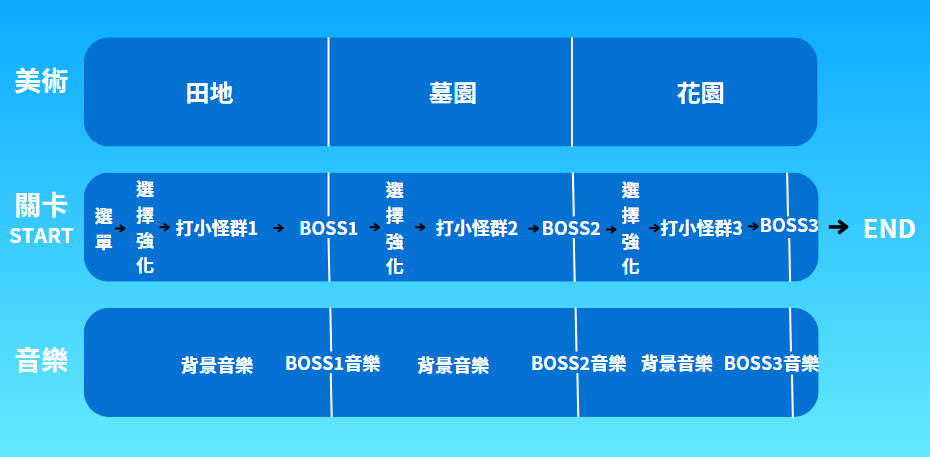
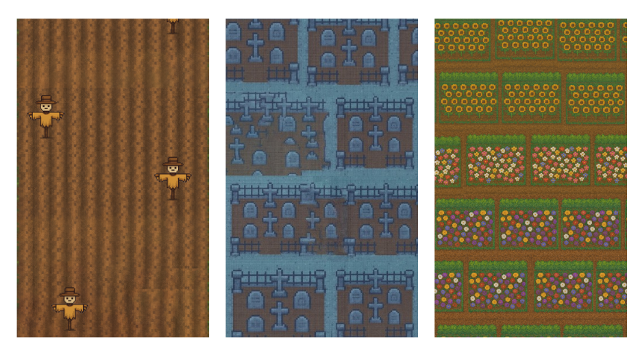
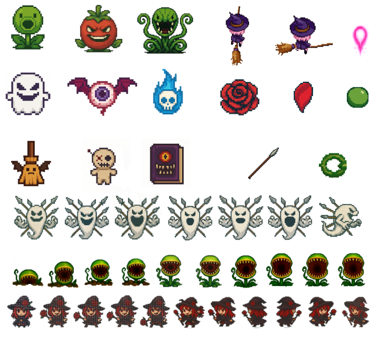

主選單以像素風場景建立女巫、藥水與冒險氛圍。
Web Game Development
女巫の藥水
以東方 Project 彈幕玩法為靈感的縱向捲軸射擊網頁遊戲。玩家操控小女巫在密集彈幕中移動、射擊、使用 Bomb 清除危機，並透過三選一強化逐步挑戰食人花、幽靈與紅女巫 Boss。


用清楚的開始按鈕與主場景，讓玩家快速理解彈幕冒險玩法。
Overview
遊戲介紹
小女巫為了奪得藥水大賽第一名，踏上收集神秘材料的冒險。她會在田地中對抗食人花、在陰森墓地面對幽靈守衛，最後於花園深處閃避紅女巫追擊。作品目標是把東方風格的彈幕密度、網頁互動與清楚的關卡節奏整合成可操作的遊戲體驗。
- 玩家使用 WASD 或方向鍵移動，長按空白鍵射擊，並用 X 鍵施放 Bomb 清除彈幕。
- 起始血量為 5 顆心，受傷後有短暫無敵；Bomb、補血與 P 點會在 Boss 戰後固定掉落。
- 三選一強化分為擴散型、集中型與連射型，影響玩家下一段戰鬥策略。
- 共 3 大關、3 隻 Boss，每隻 Boss 會依血量切換 3 到 4 種彈幕型態。
Website Link
網址放置處
這裡可放遊戲網站、GitHub Pages 或作品展示連結。
前往遊戲Game Flow
遊戲流程設計

Boss Pattern
Boss 彈幕展示


Art Direction
遊戲美術與場景

